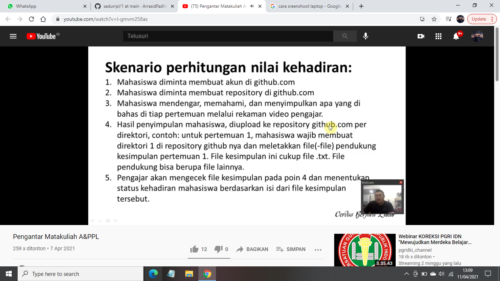

Nim : 1811500094
Nama : Ar'rasid Fadhli
Kelompok : TI6J
Hasil saya menyadur pertemuan 1 :
- Bapak memberitahukan cara membuat saduran digithub.
- Bentuk tim atau kelompok presentasi sebanyak 3 orang mahasiswa dalam satu kelompok. dan tiap tim akan presentasi hasil akhir belajarnya untuk nilai UAS.
- Dalam setiap pertemuan mahasiswa diberikan tugas untuk merangkum/menyadur materi yg diberikan di github,
karena terkait untuk nilai kehadiran tersebut diukur dari menyadur atau tidak dan untuk nilai tugas dilihat dari kualitas dari konten yang dibuat atau saduran tersebut.
- Tugas: menyimpulkan materi tiap pertemuan.
UTS: individu terkait UML
UAS: presentasi kelompok tiga orang per kelompok.
kehadiran <70 tidak lulus
